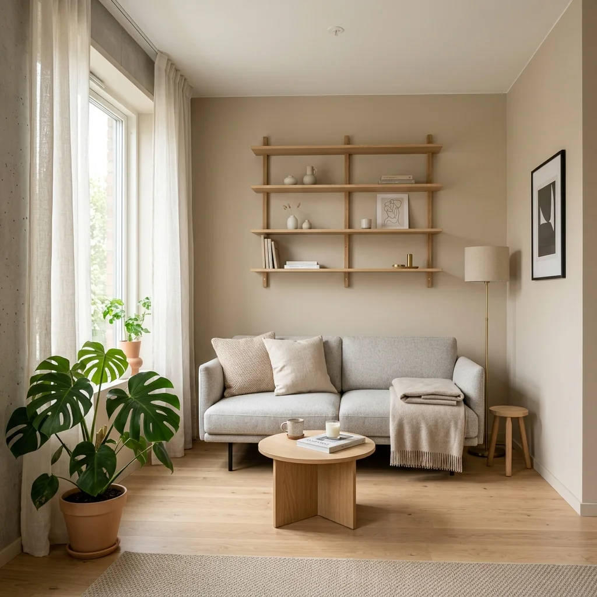
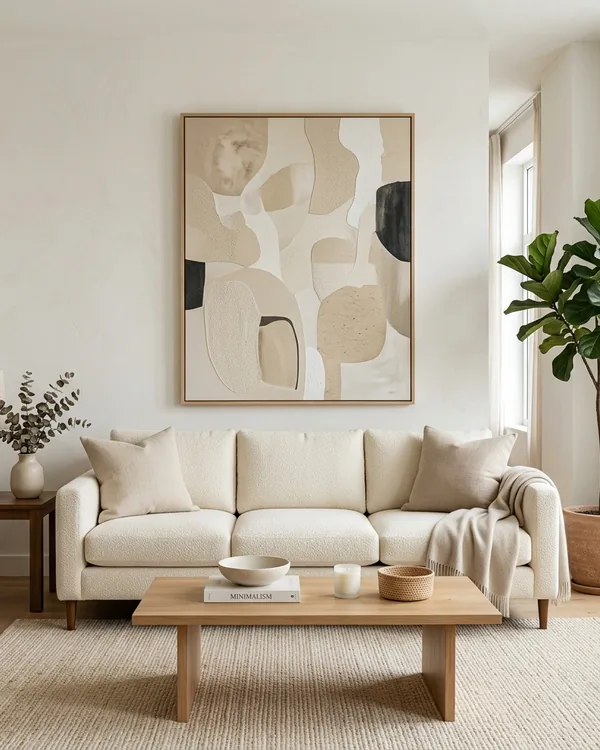
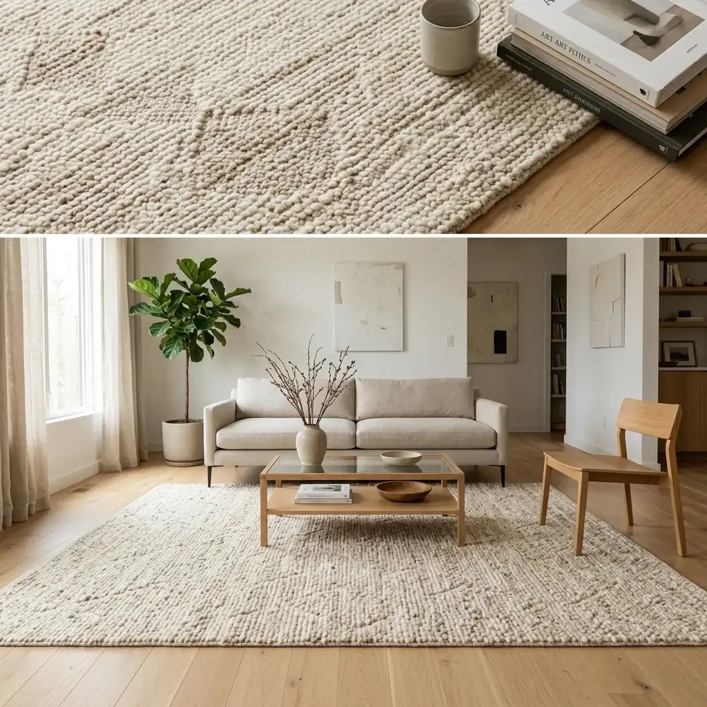
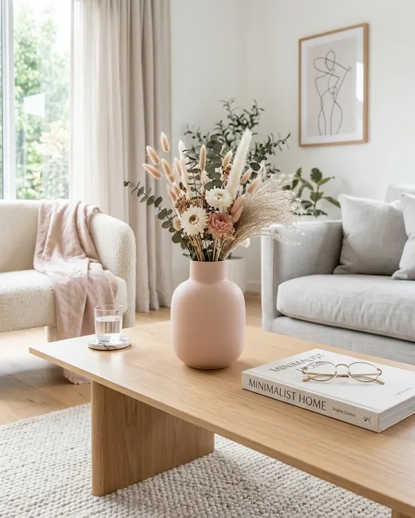
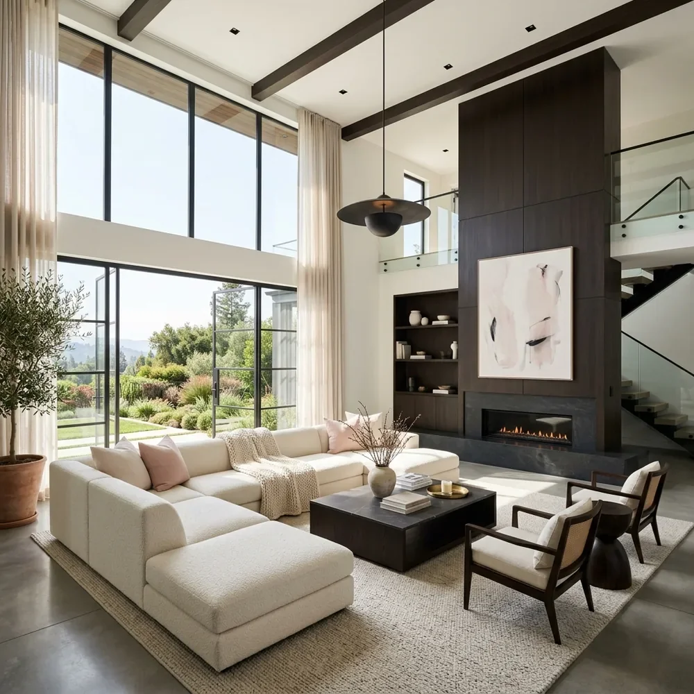

7 Minimalist Small Living Room Layout Ideas That Actually Work
You don't need a sprawling 2,000 sq ft home to have a living room that feels open, calm, and genuinely beautiful. If you've ever stood in your small living room wondering why it still feels cramped no matter what you do — you're not alone, and you're in the right place.
The secret isn't spending more money or buying more stuff. It's about using the right minimalist small living room layout ideas that work with your space, not against it. Whether you're in a studio apartment in Chicago, a cozy rental in Austin, or a compact home in the suburbs, these seven layout strategies will change how you see and use your living room.
Let me dive in — no fluff, just real ideas you can use today.

Float Your Furniture Away from the Walls
Most people shove every piece of furniture against the walls thinking it creates more space in the middle. Here's the truth: it actually makes the room feel smaller. When furniture lines all four walls, the room looks like an empty waiting room — not a cozy living space.
✅ WHY IT WORKS FOR SMALL SPACES
Floating furniture creates visual breathing room. It makes the room feel intentional and designed, and it creates a natural focal point in the center. Even pulling your sofa just 6–8 inches from the wall makes a huge difference.
Step-by-Step Setup Tips:
- Pull your sofa 6–10 inches away from the back wall.
- Angle chairs slightly inward toward the sofa to create conversation flow.
- Leave at least 18 inches of walkway between furniture pieces.
- Use a thin console table behind the sofa if you need storage behind it.
- Keep the space between furniture and walls clear — no piles, no clutter.

Where to Place: Slide a narrow sofa console table for small spaces directly behind the floating sofa to fill that gap and add a shelf for plants, books, or a small lamp.
Use a Single Statement Sofa + Nothing Else
In small living room design, one great piece beats five mediocre pieces every time. Instead of a sofa + loveseat + two chairs (which overwhelms a small space), try building the entire room around one well-chosen sofa — and let it breathe.
Think of it this way: a beautiful, well-proportioned sofa is like a centerpiece painting. Everything else in the room should support it, not compete with it.
✅ WHY IT WORKS FOR SMALL SPACES
One key seating piece with open floor space around it creates the illusion of a much larger room. It also reduces visual clutter — a core principle of minimalist living room decor.
- Choose a sofa in a neutral color: light gray, beige, cream, or taupe.
- Measure your space first — look for sofas under 84" for most small rooms.
- Add 1–2 accent pillows in a complementary tone. That's it.
- Skip the loveseat. Use a single accent chair if extra seating is needed.
- Make sure sofa legs are visible — raised legs make rooms feel taller and airier.
Recommended: Center your room with a Small Space Sofa with Solid Wood Legs (Under 84"). Floating it away from the wall and choosing raised legs keeps the room feeling light and airy.
Go Vertical with Wall-Mounted Storage
Floor space is precious in a small living room. So the smartest thing you can do? Stop storing things on the floor and start using your walls.
Wall-mounted shelves are one of the most powerful tools in small apartment living room design. They give you storage and display space without eating up a single square foot of floor area.
✅ WHY IT WORKS FOR SMALL SPACES
Vertical storage draws the eye upward, making ceilings feel higher and rooms feel taller. It also keeps floors clear, which is the #1 trick to making a small room feel bigger.
- Mount 2–3 floating shelves above your sofa or TV area.
- Keep shelf decor minimal: 1 plant, 1–2 books, 1 small vase. That's it.
- Use shelves in a light wood tone or white to keep things airy.
- Stagger shelf heights for a more dynamic, intentional look.
- Avoid heavy, thick shelves — thin floating designs look more modern.
Pro Tip: A Floating Wall-Mounted Shelves Set (Set of 3, Wood) above the sofa (leave a 12" gap) adds visual height and removes the need for bulky bookcases.
Define Zones with a Minimalist Area Rug
A rug doesn't just add style — it defines your living room's boundaries. In an open floor plan or studio apartment, a rug is what tells the eye "this is the living area." Without it, the space feels undefined and messy.
✅ WHY IT WORKS FOR SMALL SPACES
The right rug anchors all your furniture visually. It creates a "room within a room" effect, making even a studio feel organized. A neutral-toned rug in the right size also reflects light and keeps the space from feeling closed in.
- For a small living room, use a 5x8 or 6x9 rug — not smaller.
- Make sure at least the front legs of the sofa and chairs sit on the rug.
- Choose light neutral tones: ivory, warm beige, soft gray, or natural jute.
- Avoid high-pile rugs in small spaces — low pile or flat-weave keeps it clean.
- Center the rug under the coffee table, not pushed to one wall.

Anchoring the space: Use a Neutral Color Minimalist Area Rug 5x8 (Low Pile) to unify your seating area and protect your floors without adding bulk.
Choose a Multi-Function Coffee Table
In a minimalist small living room, every piece of furniture needs to justify its footprint. A standard coffee table takes up valuable floor space — but a multi-function one earns its place by doing double or triple duty.
✅ WHY IT WORKS FOR SMALL SPACES
Multi-function furniture reduces the total number of pieces you need. Fewer pieces = less clutter = a calmer, more open-feeling room. It's the core of smart small space living.
- Measure your sofa-to-wall distance — the coffee table should be 12–18" from the sofa.
- If eating or working regularly, choose a lift-top style.
- For extra seating, an upholstered storage ottoman works as a table, seat, and storage.
- Keep the surface clear except for 1–2 decorative items.

Smart Pick: A Lift-Top Coffee Table with Hidden Storage lets it work as a laptop desk or dining table while hiding clutter away.
Use a Compact TV Stand Instead of a Media Wall
Big, hulking entertainment centers are the enemy of small living room design. A media wall that goes floor-to-ceiling will dominate a small room and make it feel like a storage unit.
✅ WHY IT WORKS FOR SMALL SPACES
A low TV stand keeps sightlines open, making the room feel wider. It also limits accumulated media clutter—which in itself is a form of minimalist discipline.
- Choose a TV stand no wider than your TV + 6 inches on each side.
- Look for stands with closed cabinet doors to hide cable boxes and remotes.
- Keep the top clear — no stacked devices or decorative pileups.
- Use a TV stand with legs, not one that sits on the floor.
Recommended: A Low-Profile Wood TV Stand with Cabinet Storage against the focal wall keeps the media area tight and intentional.
Embrace the "Less Furniture, More Light" Rule
Natural light is the single best tool for making a small space feel twice its size. If you're blocking your windows with heavy drapes or large furniture, you're working against yourself.
✅ WHY IT WORKS FOR SMALL SPACES
Light visually expands space. A well-lit living room will always feel larger than a dark, furniture-heavy one. Mirrors amplify this effect even further.
- Replace heavy blackout curtains with sheer white or linen panels.
- Place a large mirror opposite a window to double the natural light.
- Use floor lamps like an Arc Floor Lamp for warm layered lighting.
- Keep windowsills completely clear to maximize the view out.

The Visual Illusion: A Large Round Wall Mirror directly across from your main window doubles the light and creates a sense of depth.
Pro Tips for Designing a Minimalist Small Living Room
Stick to 3 colors max
Choose one dominant neutral, one secondary neutral, and one soft accent. More colors = more visual clutter.
Use furniture with legs
Tables and sofas that show their legs allow light to pass underneath, making the room feel airier.
Edit ruthlessly
Every few weeks, ask yourself what you'd remove. Minimalism is an ongoing practice.
Go taller, not wider
When shopping for storage, choose taller bookcases over wide ones to use vertical space.
Keep the floor clear
The more floor you can see, the bigger the room feels. Floor clutter is the #1 enemy.
Foldable Items
Use foldable furniture for small spaces that can disappear when not needed.
Common Mistakes to Avoid
✕ Buying furniture that's too big
Always measure first. A sofa that's 6 inches too wide can ruin the entire layout flow.
✕ Using too many patterns
In a small room, busy patterns on rugs and curtains create visual chaos. Stick to solids.
✕ Ignoring vertical space
Most people forget to use shelves or high-hung curtains to draw the eye up.
✕ Rug that's too small
A tiny rug looks like a bath mat. Size up to at least 5x8 to anchor the entire space.
Frequently Asked Questions
What is the best layout for a very small living room?
The best layout is to float one sofa away from the wall, use wall-mounted shelves, and leave as much open floor space as possible. Focus on quality over quantity.
How do I make a small living room look bigger?
Use light neutrals, keep floors clear, hang curtains high, and use large mirrors opposite windows to reflect light and create depth.
Is minimalist design good for small spaces?
Absolutely. Minimalism Combats limited square footage by reducing the count of items and focusing on functionality and light.
What colors work best?
Warm neutrals like soft white, beige, ivory, and light taupe are ideal. They reflect light and create a calm atmosphere.